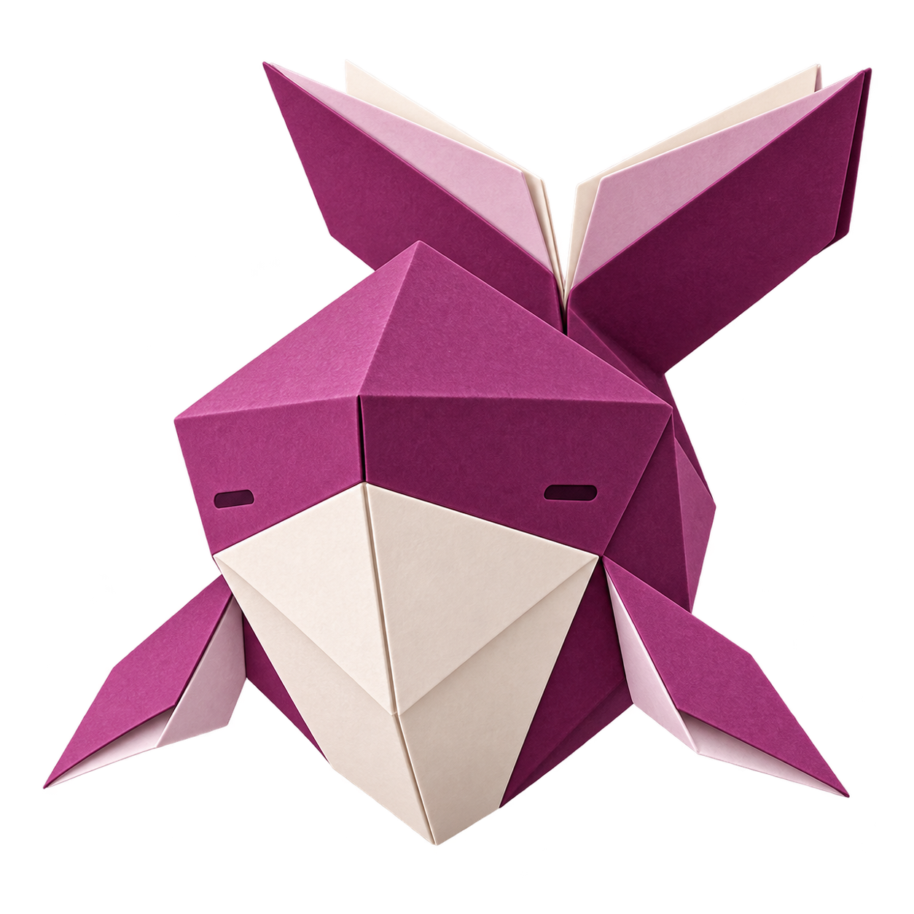
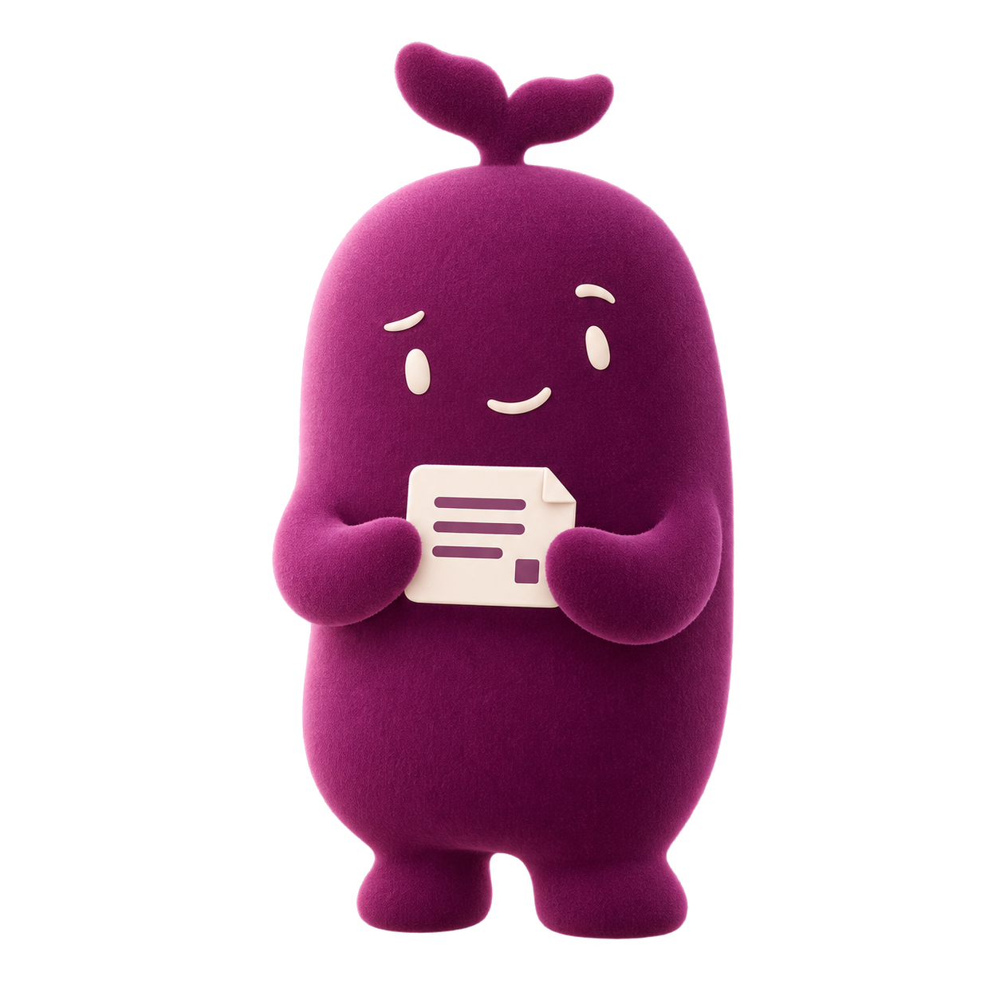
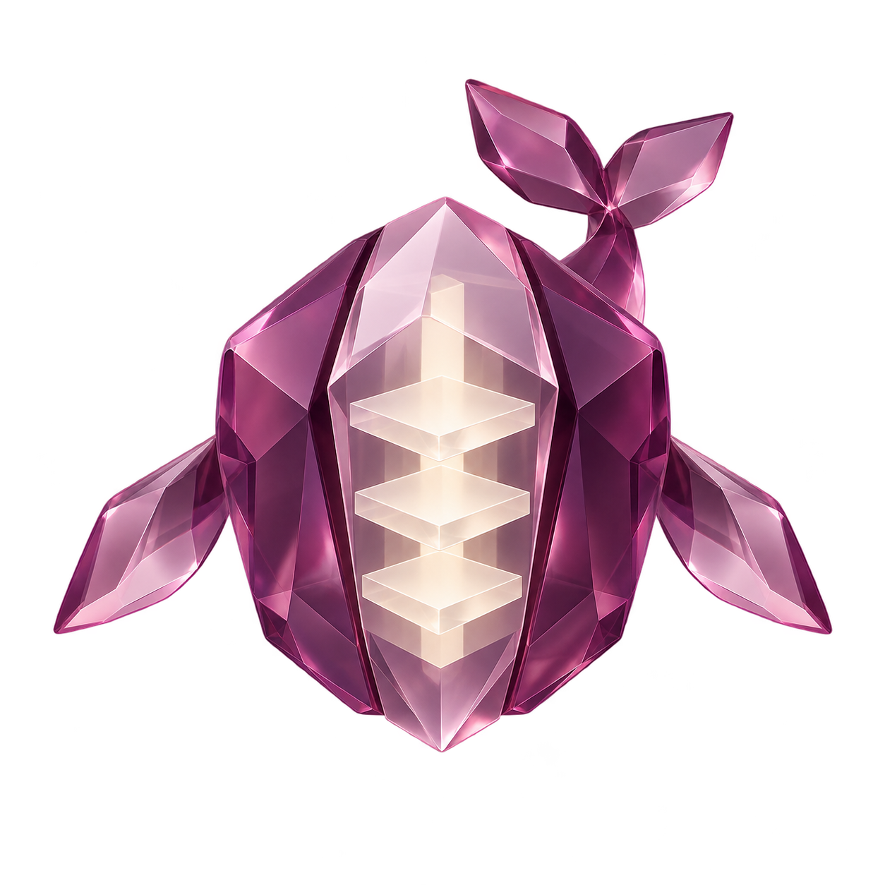

A
折页鲸
折纸书页 · 研究与阅读

折面、书页和鲸尾组成正面轮廓，适合希望保留鲸鱼意象的设计路线。
已于 2026-10-16 采用 B「花尾徽记」，主题沿用紫荆紫。点击形象可查看透明原图。

折面、书页和鲸尾组成正面轮廓，适合希望保留鲸鱼意象的设计路线。
紫荆花瓣与鲸尾合成标记。正式资源 xijing-emblem.png 统一用于各界面位置，保留透明背景。

小鲸尾、简洁表情和证据卡形成角色，适合对话头像与状态动画。

半透明切面包裹三层研究页，偏科技展示风格，小图标需要进一步简化。